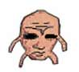

妖怪が語る Why LSD？
LSDについて明月荘の妖怪が
分かりやすく解説します。
- Aさん：LSDって危ないんじゃないの？
- 明月荘の妖怪：なんで？危なくないよ。
- Bさん：だって合法なの？
- 明月荘の妖怪：もちろん合法だよ。
- Cさん：なんで？だってフラッシュバックがあるということは幻覚剤なんでしょ？
- 明月荘の妖怪：違うよ。全然違うよ。
- Dさん：でも、あやしいクスリなんでしょ？
- 明月荘の妖怪：全然違うよ。全く関係ないよ。
- Eさん：へー、じゃあ、LSDと幻覚剤の違いは何なの？
- 明月荘の妖怪：じゃあ、簡単に説明してあげるよ。まず、幻覚剤は非合法です。
錠剤だけか、紙切れ一枚、カプセルだったりすんだ。
そのようなもので、現実には存在しない異常な感覚を起こすから幻覚剤と言う名前がついたんだ。
これは非合法。捕まっちゃいます。
でもLSDというのはプレイステーションのソフトなんだ。存在する異常な感覚を起こすソフトなんだよ。
- Fさん：じゃあ、クソゲーとLSDの違いは？
- 明月荘の妖怪：クソゲーと言うのは、理不尽なルールに従わなければならない。
ただ説明書を読むだけではクリアできない。これは合法なんだ。
でも、僕は平等だと思わない。クリア出来る人も出来ない人も出てきちゃうからね。
でもLSDの場合は、同じ夢を同じキャラで同じシステムで同じ散歩をする。
要は、同じ土俵で戦うってことだよね。この部分に僕はとてつもない何かを感じたんだ！
- Gさん：怪しい宗教団体なんじゃないの？
- 明月荘の妖怪：全く違うよ。信仰の自由はあると思うよ。でもこれは宗教じゃないよ。
- Hさん：バックに誰かいるんじゃないの？
- 明月荘の妖怪：バックって（笑）
いやいや笑っちゃいけないか。でもバックはいないよ。
普通に巨顔オヤジがいてアパートがある。黒い紳士が後ろにいるとかはない。
そうしたらつかまっちゃうじゃないか。僕にはそれはできない。
- Iさん：じゃあ、さっきから法の話しをしているんだけど、どんな法律がからんでいるの？
- 明月荘の妖怪：昔は法律が甘かった時代があったんだ。そのときに思いっきり偏見で見られる業界になってしまった。それから法律は厳しくなりました。
LSDに関連する法律には「薬事法」「医師法」というようなものがあるんだ。
このLSDというのは厳しいこれらの法律を守り常に意識しながらやっていかなきゃいけないんだ。
- Jさん：じゃあ、テストとか資格とかいるの？
- 明月荘の妖怪：いままではそういうのは存在していなかった。
でも僕は試験、資格の制度を導入しようと思っている。
いくら運転が上手でも免許を取るじゃん。
だから、どんな人もこのゲームをやるときには、キメ方、そして、悪夢のうなされ方、ルール、マナーなどを勉強して資格をとるっていうのはありなんじゃないかなと思っています。
- Kさん：LSDを買ってあわなかったら返していいの
- 明月荘の妖怪：もちろん、特定商取引に関する法律の中にある一つの項目には20日間クーリングオフというものがあります。
2週間のんでだいたい空になったとするじゃん。
でも商品を受けとってから20日以内なら空ケースを返しても全額返してもらえる。
これは法律で決まっていることなので当たり前のことなのです。
- Lさん：えー、それじゃみんな返してきちゃうんじゃないの？
- 明月荘の妖怪：LSDに対して絶対の自信があるから、そんなことは絶対にないって断言できるよ、僕は。そこまで真剣にやっているんだ！
- Mさん：じゃあさあ、例えばこのゲームをやるとするじゃないですか。友達を紹介するときに、まあ勧誘するときに使っていい言葉と使っちゃいけない言葉ってあるの？
- 明月荘の妖怪：それはもちろんあるよ。それは勉強してもらって学んでもらって。だから認定制度っていうものがなければいけないって思ってるんだ。
「必ずキマる」「何もしなくてもブっ飛ぶ」「ヤフオクで売るだけでよい」
こういうのは完全にNGだね。
- Nさん：へー、そうなんだ。じゃあ、ある程度のトリップの目安を教えてよ。
- 明月荘の妖怪：あー、そういう入りかたが一番危険なような気がする。
でもこのゲームは自分の努力が一番反映されるゲームだと思っている。
例えばいろんなイベントがあるんだけれど、天井が崩れるようなイベントもあれば、ピンクのゾウが空を飛んでるみたいなものもあれば、
死体が転がってるみたいなものもあれば、がんばればがんばるほどキマると思うよ。
やっぱり、自分のできる範囲で、自分のキャパシティを越えない一番気持ちいいところを見つけてほしいね。
ここから始まる大きな夢に向かって頑張れるゲームなんじゃないかな？
- Oさん：こんな方法やこんな遊び方でプレイすると違法ですよっていうものはある？
- 明月荘の妖怪：それはさっきの質問に近いね。それは認定試験を受けて勉強すると分かるよ。
- Pさん：じゃあ、LSDはどれだけ法令基準に心がけているの？
- 明月荘の妖怪：徹底的に。この世に完璧はないと言われているが完璧を目指したい。これだけは。
- Qさん：そんなにおいしい話しだったら本社（アスミック・エース・エンタテインメント）は何でもうけてるの？
- 明月荘の妖怪：おいしい話には気をつけた方がいいけど、LSDのプレイは周りの人に喜んでもらえて自分も成長できるんだ。
その結果として会社も適正利益を上げているから。
- Rさん：LSDのいいところは何？
- 明月荘の妖怪：LSDはまず一番の売りは自由。
いいところは美少女を口説かなくてよくて悪の魔王、ロボットを気にしなくてよくてだけどゲームはできる。
最初から最後までのプレイを自由にやれるんだ。だから、自分としてはソフト1本でトリップができる。
僕はそこにほれた。LSDのいいところもそこだ！
<<BACK